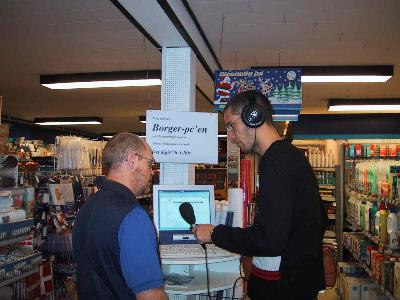

Nyt fra tovholderen |
|  |
DR-journalist ser på "Det gode liv" i Ullits.DR-journalist Mads Hvidtved Grand producerer for øjeblikket P1 radioudsendelser, hvor temaet er "Det gode liv i landsbyen". Interessen for netop Ullits fik Mads Hvidtved Grand via projektet Det Digitale Ullits, fortæller DDU-tovholder Bjarne Nielsen. Mads kontaktede mig for at høre mere om livet i Ullits og han ville meget gerne have en lokalperson til at "fortælle" lytterne om de værdier og det liv, der findes i landsbyen. Den lokale fortæller er dyrlæge Preben Bjerre og første udsendelse kommer fredag den 3. januar kl. 14.15 (genudsendes lørdag kl. 19.50 til 20.35) Har du ikke mulighed for, at høre udsendelsen i radioen, kan du høre ud klikke dig ind på www.ullits.dk, hvor der vil blive oprettet link til P1-udsendelsen. På foto er Mads i gang med at interviewe Preben om BorgerPC-en hos Merko. |